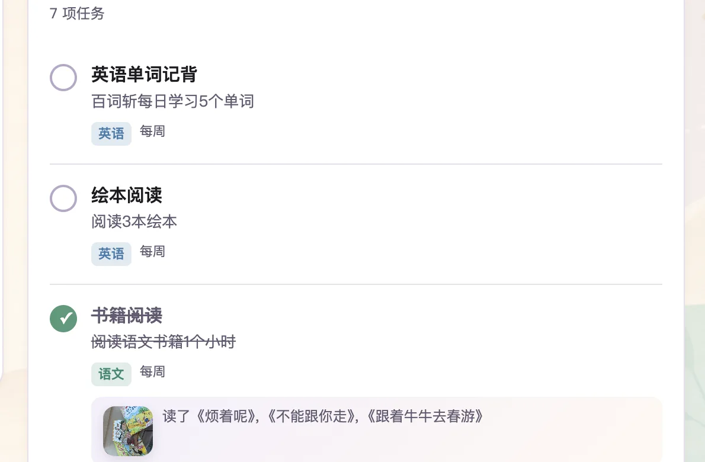
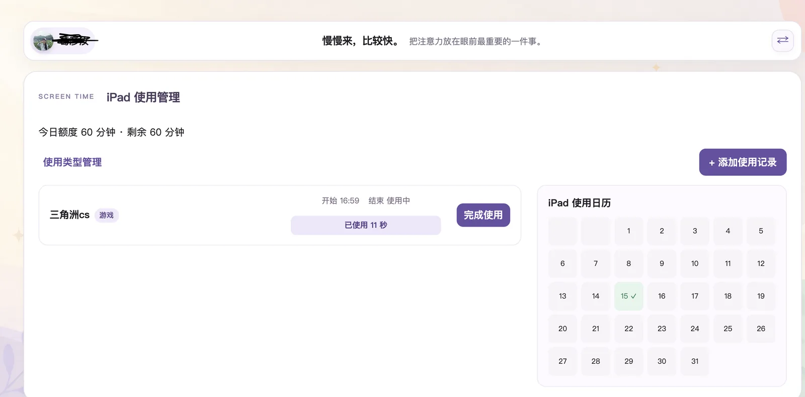

每日任务打卡
支持单次、每日与每周任务。完成情况直接落在日历上，成长一眼可见。
- 完成备注与图片凭证
- 未来任务与历史状态清晰区分
核心功能
从每天的小任务到合理用屏，建立清晰、温和、可持续的家庭习惯。
支持单次、每日与每周任务。完成情况直接落在日历上，成长一眼可见。
通过邀请码加入同一个家庭，每位成员拥有独立头像、任务和日历视图。
先设每日额度，再记录每次使用。学习与娱乐可使用不同的计时规则。
真实界面


开始使用
不需要复杂设置，从选择家庭成员开始，把目标变成每天都做得到的小事。
通过邀请码，让家里的设备共享同一套数据。
安排每日习惯，也可以设置当天的 iPad 使用时间。
勾选任务、添加备注或照片，记录真实成长。
完成、未完成与超时状态都能清楚找到。